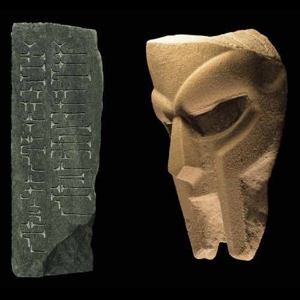
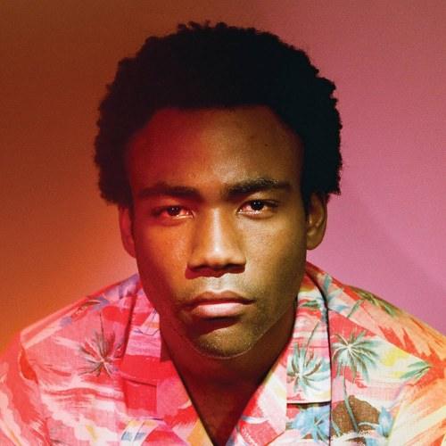
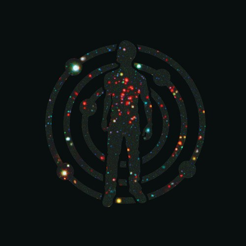
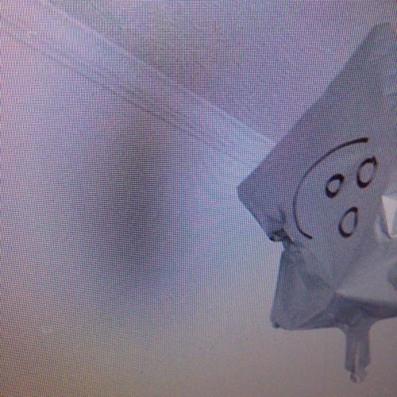

BORN LIKE THIS (Redux) - MF DOOM (2009)
The Mouse and the Mask (Metalface Edition) - DANGERDOOM (2005)
A LA SALA - Khruangbin (2024)

Because the Internet - Childish Gambino (2013)
STN MTN / Kauai - Childish Gambino (2014)

Doris - Earl Sweatshirt (2013)

Watching Movies with the Sound Off - Mac Miller (2013)
Faces - Mac Miller (2014)
Voir Dior - Earl Sweatshirt & The Alchemist (2023)
Enter the Wu-Tang (36 Chambers) - Wu-Tang Clan (1993)
KiD CuDi presents SATELLITE FLIGHT: The journey to Mother Moon - Kid Cudi (2014)
Natural High - Sunz of Man (1998)
The Infamous - Mobb Deep (1995)
HateToBreakItToYou - drip-133 & Bones (2019)
